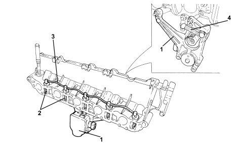

INTRODUCTION - INTAKE AND EXHAUST MANIFOLDS
- Path
- Descriptions > 10 ENGINE > 1072 INLET AND EXHAUST MANIFOLDS > INTRODUCTION - INTAKE AND EXHAUST MANIFOLDS
- Kind
- system description
- Applies to
- engines: 2.4 JTD 20v; all production periods
- Interactive page
- https://sloeber94.github.io/elrnDB-fCrm/en/#/194003902
Applies to: engines: 2.4 JTD 20v; all production periods
INTAKE MANIFOLD SPECIFICATIONS
The continuous adjustment swirl valves are incorporated in the intake manifold inside the four additional intake ducts.
The swirl valves are operated by means of an electronically controlled actuator. The actuator moves an adjustment rod which operates on the swirl valves via an idler.
The swirl valves are connected to one another by linkage.
Thanks to the geometric shape of the four additional intake ducts and the swirl valves the fresh gases create a vortex and are directed in the best possible way to the combustion chamber. The filling of the cylinders is therefore excellent.
The continuous adjustment of the swirl valves makes it possible to produce optimum turbulence for all engine speed and load conditions.

1. Swirl valve electric control actuator
2. Swirl valves
3. Swirl valve connecting linkage
4. Swirl valve control lever
It is possible to adapt the turbulence of the fresh gases inside the combustion chambers to the respective engine load conditions by adjusting the swirl valves.
High turbulence is created in the combustion chamber by closing the swirl valves, thereby allowing an optimum fuel mixture to be injected at low engine revs.
Thanks to this optimum mixture of fuel with fresh gases the emission of pollutant substances is greatly reduced.

At a higher number of engine revs the swirl valves are completely open. This produces a reduction in the turbulence of the fresh gases and increases the degree of filling.
A higher degree of cylinder filling produces an increase in engine power.